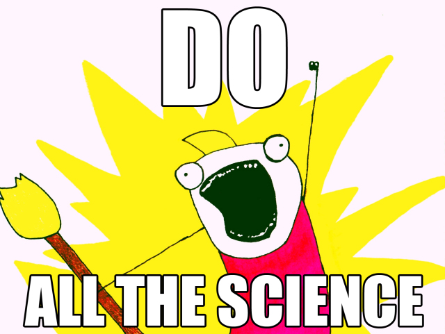

Calling all children of EV Employees! Yikes! We are all home for a few weeks. <i><b>LET’S DO SCIENCE (& Engineering & Computer Programming)!</b></i>

Starting April 1, 2020 and going through April 24, 2020, you can submit a science project for the <b>first ever</b> EV Virtual ScienceFair! Children of all ages in all locations are welcome. One winner in each age category will be determined. Winning kids will receive a $50 Amazon gift card. All participants will receive a digital certificate.
Entries will be judged on idea, documentation (use <a src http=’https://github.com/shaystrong/sciencefair/blob/master/Template.md'><b>this</b> template</a>), novelty, thoroughness, and creativity. Kids 13+ years old are encouraged to create public Github repositories and submit the link upon entering their results.
The judges are be a mixture of Data Scientists, Astronomers, and Software Developers at EV.
All types of projects are welcome, but we encourage an emphasis on engineering, computer science, data science, and coronavirus projects. Why corona virus you ask? – because there is a lot of amazing data. We want to see you ask questions and help us understand why we are all stuck at home.
Up to 5 years old
6 – 8 years old
9 – 11 years old
12 – 14 years old
15+ years old
<b><i> Winners will be announced May 1, 2020 on EV Workplace.</i></b>
https://www.youtube.com/playlist?list=PLSh2l8jOpghZUtpFvmBP8m5mUIYe1fTl6
https://mysteryscience.com/school-closure-planning
https://www.sciencebuddies.org/science-fair-projects/project-ideas/big-data
<i>Data related to COVID-19</i>
https://data.humdata.org/dataset/novel-coronavirus-2019-ncov-cases